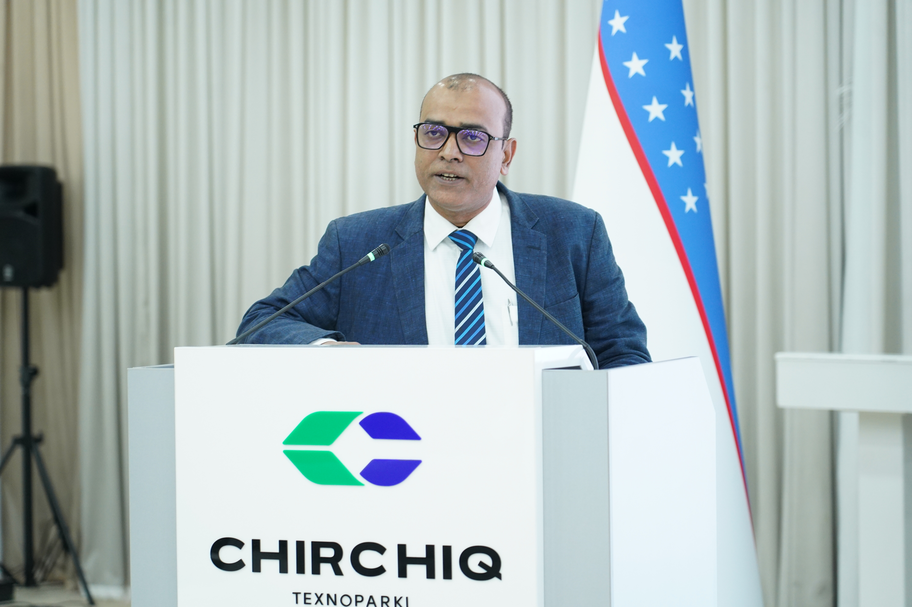

We investigate innovative biological, chemical and integrated strategies for the sustainable valorisation of lignocellulosic biomass, with particular emphasis on biomass pretreatment, enzyme technology, biofuels, biocatalysis and sustainable biorefineries.
The Lignocellulose & Biofuel Research Laboratory explores sustainable technologies for converting agricultural and lignocellulosic residues into high-value products.
Our research integrates biomass fractionation, physicochemical pretreatment, microbial enzymes, enzymatic saccharification, fermentation and downstream valorisation.
A major objective of the laboratory is to develop integrated biorefinery strategies capable of utilizing cellulose, hemicellulose and lignin fractions efficiently rather than considering lignocellulosic residues merely as waste.
To develop scientifically robust, economically viable and environmentally sustainable technologies for converting renewable lignocellulosic resources into fuels, chemicals, enzymes and advanced materials.
Our interdisciplinary research connects biomass chemistry, enzymology, microbial biotechnology, fermentation and sustainable bioprocess engineering.
Development and optimisation of physicochemical and emerging pretreatment technologies for disrupting lignocellulosic recalcitrance and improving biomass fractionation.
Production, characterisation and application of cellulases, xylanases, pectinases, laccases and immobilised biocatalysts for biomass conversion and environmental applications.
Enzymatic hydrolysis, microbial fermentation, simultaneous saccharification and fermentation, and process optimisation for lignocellulosic bioethanol production.
Conversion of lignin and cellulose fractions into functional materials, nanomaterials, adsorbents and other value-added products.
Application of enzymes, microbial systems and nano-biocatalytic approaches for pollutant degradation, wastewater treatment and environmental remediation.
Integration of biomass conversion processes with process optimisation, techno-economic assessment, life-cycle thinking and circular bioeconomy principles.
Our work follows an integrated biomass-to-products philosophy.

Department of Biosciences
Integral University
Lucknow, India
Research interests include lignocellulosic biomass valorisation, bioethanol production, biomass pretreatment, industrial enzymes, enzyme immobilisation, lignin valorisation, environmental biotechnology and sustainable biorefinery development.
The laboratory combines biochemical, microbiological and process-engineering approaches to improve the conversion of renewable biomass into useful products.
We welcome enquiries from motivated students, researchers and collaborators interested in lignocellulosic biomass, enzyme technology, biofuels, lignin valorisation, sustainable materials and biorefinery research.
Contact the Lab